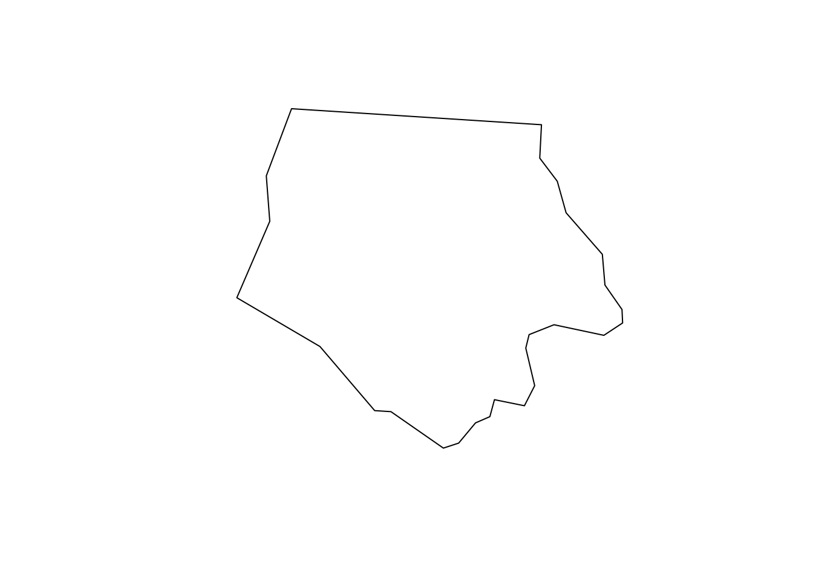

install.packages("sf")
install.packages("rstac")Using rstac and CQL2 to query STAC APIs
This tutorial builds upon the “Download data from a STAC API using R, rstac, and GDAL” tutorial tutorial, developing more complicated STAC queries using rstac to find, download, and process Landsat data using STAC metadata. That tutorial walks through building queries with rstac, using typical R functions to compose queries and download data. This tutorial walks through using rstac for more complex queries, based on CQL2 and the STAC API Filter Extension, and using the metadata provided by STAC APIs to filter through items and process assets.
To run this tutorial, you’ll need the rstac and sf packages. If necessary, you can install both packages via install.packages():
As in the last tutorial, we’re going to start off by querying Microsoft’s Planetary Computer STAC API to get data for Ashe County, North Carolina. Let’s go ahead and load the geometry for the county:
ashe <- sf::read_sf(system.file("shape/nc.shp", package = "sf"))[1, ]
sf::st_geometry(ashe) |> plot()

Let’s try and get Landsat imagery for this area from January 2021. As we saw last time, we’re able to find all the STAC Items that match this description using rstac::stac_search(), providing our bounding box, time range, and desired data collection as regular function arguments. To get all the Landsat images for this spatiotemporal area of interest, we might write our query like this:
ashe_bbox <- ashe |>
sf::st_transform(4326) |>
sf::st_bbox()
stac_query <- rstac::stac(
"https://planetarycomputer.microsoft.com/api/stac/v1"
) |>
rstac::stac_search(
collections = "landsat-c2-l2",
bbox = ashe_bbox,
datetime = "2021-01-01/2021-01-31"
) |>
rstac::get_request()
stac_query###STACItemCollection
- features (12 item(s)):
- LE07_L2SP_017035_20210127_02_T1
- LC08_L2SP_018035_20210126_02_T1
- LC08_L2SP_018034_20210126_02_T1
- LC08_L2SP_017035_20210119_02_T1
- LE07_L2SP_018035_20210118_02_T1
- LE07_L2SP_018034_20210118_02_T2
- LE07_L2SP_017035_20210111_02_T2
- LC08_L2SP_018035_20210110_02_T1
- LC08_L2SP_018034_20210110_02_T1
- LC08_L2SP_017035_20210103_02_T1
- LE07_L2SP_018035_20210102_02_T1
- LE07_L2SP_018034_20210102_02_T2
- assets:
ang, atmos_opacity, atran, blue, cdist, cloud_qa, coastal, drad, emis, emsd, green, lwir, lwir11, mtl.json, mtl.txt, mtl.xml, nir08, qa, qa_aerosol, qa_pixel, qa_radsat, red, rendered_preview, swir16, swir22, tilejson, trad, urad
- item's fields:
assets, bbox, collection, geometry, id, links, properties, stac_extensions, stac_version, typeAs we can see, this returns 12 separate items. We can also see that those items seem to have different prefixes in their names; some start with LE07, while others start with LC08. We might be able to guess what this means (spoiler alert, LE07 corresponds to Landsat-7 imagery, while LC08 is Landsat-8), but we might also not know which of these items are actually relevant to our search.
Luckily enough, STAC items include useful metadata about what their associated assets actually represent. This metadata gets converted by rstac into a list, which is then stored in the properties element of each item in our item collection. We can look at the names of these item properties to get a sense of what metadata is available for each of our items:
lapply(stac_query$features, \(x) names(x$properties)) |>
unlist() |>
unique() [1] "gsd" "created"
[3] "sci:doi" "datetime"
[5] "platform" "proj:epsg"
[7] "proj:shape" "description"
[9] "instruments" "eo:cloud_cover"
[11] "proj:transform" "view:off_nadir"
[13] "landsat:wrs_row" "landsat:scene_id"
[15] "landsat:wrs_path" "landsat:wrs_type"
[17] "view:sun_azimuth" "landsat:correction"
[19] "view:sun_elevation" "landsat:cloud_cover_land"
[21] "landsat:collection_number" "landsat:collection_category"Many of these fields are defined by the STAC specification as common metadata, which defines fields that should mean the same thing across multiple data providers. For instance, the platform field should detail the “unique name of the specific platform to which the instrument is attached”, which means that we should be able to use it to confirm that the item naming conventions do in fact correspond to whether an image comes from Landsat-7 or Landsat-8:
lapply(
stac_query$features,
\(x) data.frame(id = x$id, platform = x$properties$platform)
) |>
do.call(what = rbind) id platform
1 LE07_L2SP_017035_20210127_02_T1 landsat-7
2 LC08_L2SP_018035_20210126_02_T1 landsat-8
3 LC08_L2SP_018034_20210126_02_T1 landsat-8
4 LC08_L2SP_017035_20210119_02_T1 landsat-8
5 LE07_L2SP_018035_20210118_02_T1 landsat-7
6 LE07_L2SP_018034_20210118_02_T2 landsat-7
7 LE07_L2SP_017035_20210111_02_T2 landsat-7
8 LC08_L2SP_018035_20210110_02_T1 landsat-8
9 LC08_L2SP_018034_20210110_02_T1 landsat-8
10 LC08_L2SP_017035_20210103_02_T1 landsat-8
11 LE07_L2SP_018035_20210102_02_T1 landsat-7
12 LE07_L2SP_018034_20210102_02_T2 landsat-7This metadata can be really useful to let us decide which items we want to download from, without needing to download the whole data object! To query using these fields, however, we’re going to need to build our queries in a different way. Namely, rather than using rstac::stac_search(), we’re going to have to write our queries in Common Query Language, or CQL2. CQL2 is a draft OGC standard setting out “a generic filter grammar […] used in query operations to identify the subset of resources, such as features, that should be included in a response”. STAC APIs which implement the filter extension can accept CQL2 queries, which can help you filter down the set of items returned by the API.
CQL2 has a number of component pieces which define logical operators, spatial and temporal filters, and other filtering functiions. We’re going to focus primarily on how to use the most basic components to find items that intersect our spatiotemporal area of interest and have the properties we desire.
Luckily, rstac supports writing CQL2 queries through the rstac::ext_filter() function, turning R’s logcal operators and objects into valid CQL2 queries. This function helps to translate R expressions into CQL2 that can be sent as a query to a STAC API. A handful of helper functions, prefixed with cql2_, also help translate R objects into valid CQL2 representations.
For instance, to turn our stac_search() query into an ext_filter() query, we’ll need to convert both our bounding box and datetime arguments. We can convert our bounding box into a representation that ext_filter() can use via rstac::cql2_bbox_as_geojson():
ashe_bbox_geojson <- rstac::cql2_bbox_as_geojson(ashe_bbox)
ashe_bbox_geojson$type
[1] "Polygon"
$coordinates
$coordinates[[1]]
[,1] [,2]
[1,] -81.74091 36.23444
[2,] -81.23971 36.23444
[3,] -81.23971 36.58973
[4,] -81.74091 36.58973
[5,] -81.74091 36.23444And we can convert our datetime into a valid interval using rstac::cql2_interval():
time_range <- rstac::cql2_interval("2021-01-01", "2021-01-31")
time_rangeinterval("2021-01-01", "2021-01-31")With these objects converted, we’re then able to build a query that uses CQL2 using rstac::ext_filter(). Rather than providing our filters as function arguments, like we did with stac_search(), we’re going to instead provide ext_filter() with a single query expression that combines all of the filters we care about. For instance, to request only items belonging to the Landsat collection, we’ll use == to filter to only items whose collection is landsat-c2-l2:
rstac::stac("https://planetarycomputer.microsoft.com/api/stac/v1") |>
rstac::ext_filter(
collection == "landsat-c2-l2"
)###RSTACQuery
- url: https://planetarycomputer.microsoft.com/api/stac/v1
- params:
- filter: collection = 'landsat-c2-l2'
- field(s): version, base_url, endpoint, params, verb, encodeIn addition to using logical operators, we’ll also use spatial and temporal operators to limit our results to only our area of interest. For instance, we’ll use the t_intersects CQL2 function and our time_range variable to limit our results to just January 2021. We’ll need to wrap our variable in {{}} to tell rstac to replace the variable name with its contents:
rstac::stac("https://planetarycomputer.microsoft.com/api/stac/v1") |>
rstac::ext_filter(
collection == "landsat-c2-l2" &&
t_intersects(datetime, {{time_range}})
)###RSTACQuery
- url: https://planetarycomputer.microsoft.com/api/stac/v1
- params:
- filter: collection = 'landsat-c2-l2' AND T_INTERSECTS(datetime,INTERVAL('2021-01-01','2021-01-31'))
- field(s): version, base_url, endpoint, params, verb, encodeNotice how we used && to combine these two filters, restricting our results to only items that satisfy both conditions. Also notice how the filter parameter in our rstac query has changed, including a call to T_INTERSECTS()!
Similarly, we’ll need to use the s_intersects() CQL2 function to restrict our results to our spatial area of interest using our ashe_bbox_geojson variable:
rstac::stac("https://planetarycomputer.microsoft.com/api/stac/v1") |>
rstac::ext_filter(
collection == "landsat-c2-l2" &&
t_intersects(datetime, {{time_range}}) &&
s_intersects(geometry, {{ashe_bbox_geojson}})
)###RSTACQuery
- url: https://planetarycomputer.microsoft.com/api/stac/v1
- params:
- filter: collection = 'landsat-c2-l2' AND T_INTERSECTS(datetime,INTERVAL('2021-01-01','2021-01-31')) AND S_INTERSECTS(geometry,POLYGON((-81.740905671483 36.234442085901,-81.2397076336137 36.234442085901,-81.2397076336137 36.589729047258,-81.740905671483 36.589729047258,-81.740905671483 36.234442085901)))
- field(s): version, base_url, endpoint, params, verb, encodeThis query is equivalent to the one we constructed via stac_search(): we’re filtering our results based on collection and spatiotemporal range. To execute it against Planetary Computer, we’re going to need to use post_request(), rather than get_request(), to send this query as an HTTP POST rather than GET request:
rstac::stac("https://planetarycomputer.microsoft.com/api/stac/v1") |>
rstac::ext_filter(
collection == "landsat-c2-l2" &&
t_intersects(datetime, {{time_range}}) &&
s_intersects(geometry, {{ashe_bbox_geojson}})
) |>
rstac::post_request()###STACItemCollection
- features (12 item(s)):
- LE07_L2SP_017035_20210127_02_T1
- LC08_L2SP_018035_20210126_02_T1
- LC08_L2SP_018034_20210126_02_T1
- LC08_L2SP_017035_20210119_02_T1
- LE07_L2SP_018035_20210118_02_T1
- LE07_L2SP_018034_20210118_02_T2
- LE07_L2SP_017035_20210111_02_T2
- LC08_L2SP_018035_20210110_02_T1
- LC08_L2SP_018034_20210110_02_T1
- LC08_L2SP_017035_20210103_02_T1
- LE07_L2SP_018035_20210102_02_T1
- LE07_L2SP_018034_20210102_02_T2
- assets:
ang, atmos_opacity, atran, blue, cdist, cloud_qa, coastal, drad, emis, emsd, green, lwir, lwir11, mtl.json, mtl.txt, mtl.xml, nir08, qa, qa_aerosol, qa_pixel, qa_radsat, red, rendered_preview, swir16, swir22, tilejson, trad, urad
- item's fields:
assets, bbox, collection, geometry, id, links, properties, stac_extensions, stac_version, typeAs you can see, the results from this query are exactly equivalent to those from stac_search(). For straightforward queries like this, stac_search() provides an easier and friendlier interface for constructing requests. However, using CQL2 via ext_filter() allows us to take full advantage of the metadata provided by the STAC API.
For instance, we could also filter our results to only include data from Landsat-8, using the platform property that we examined earlier. To do so, we’ll add another filter using == to our query:
rstac::stac("https://planetarycomputer.microsoft.com/api/stac/v1") |>
rstac::ext_filter(
collection == "landsat-c2-l2" &&
t_intersects(datetime, {{time_range}}) &&
s_intersects(geometry, {{ashe_bbox_geojson}}) &&
platform == "landsat-8"
) |>
rstac::post_request()###STACItemCollection
- features (6 item(s)):
- LC08_L2SP_018035_20210126_02_T1
- LC08_L2SP_018034_20210126_02_T1
- LC08_L2SP_017035_20210119_02_T1
- LC08_L2SP_018035_20210110_02_T1
- LC08_L2SP_018034_20210110_02_T1
- LC08_L2SP_017035_20210103_02_T1
- assets:
ang, atran, blue, cdist, coastal, drad, emis, emsd, green, lwir11, mtl.json, mtl.txt, mtl.xml, nir08, qa, qa_aerosol, qa_pixel, qa_radsat, red, rendered_preview, swir16, swir22, tilejson, trad, urad
- item's fields:
assets, bbox, collection, geometry, id, links, properties, stac_extensions, stac_version, typeWe could also use other logical operators to filter these results down further. For instance, the eo:cloud_cover property, part of the electro-optical STAC extension, provides an estimate of how much of each image is covered by clouds. We could add a filter to restrict our results to only include images with less than 10% cloud cover using this property and <:
stac_query <- rstac::stac("https://planetarycomputer.microsoft.com/api/stac/v1") |>
rstac::ext_filter(
collection == "landsat-c2-l2" &&
t_intersects(datetime, {{time_range}}) &&
s_intersects(geometry, {{ashe_bbox_geojson}}) &&
platform == "landsat-8" &&
`eo:cloud_cover` < 10
) |>
rstac::post_request()rstac is able to translate several other R expressions into CQL2 representations. For a list of supported R expressions and other examples, check out the rstac documentation.